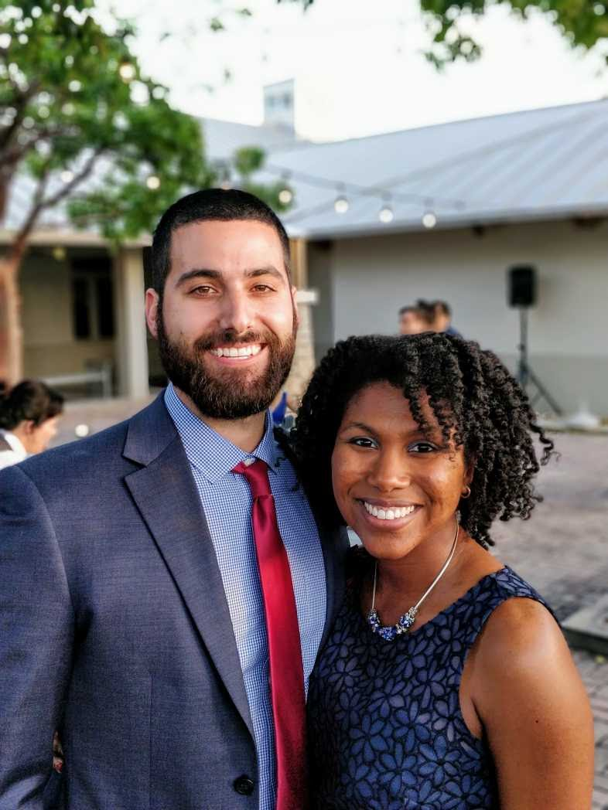
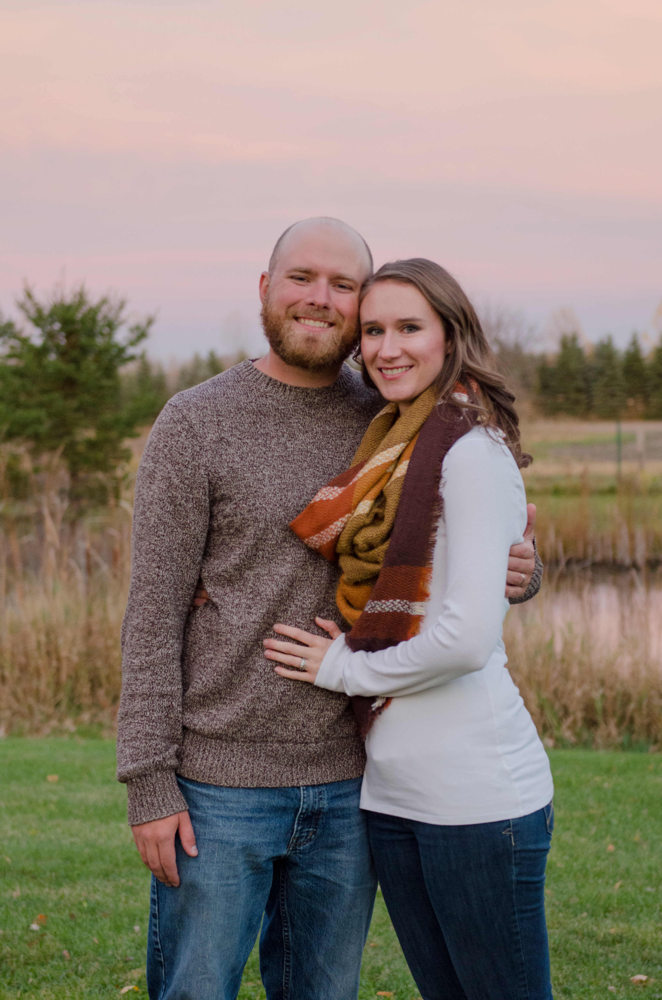
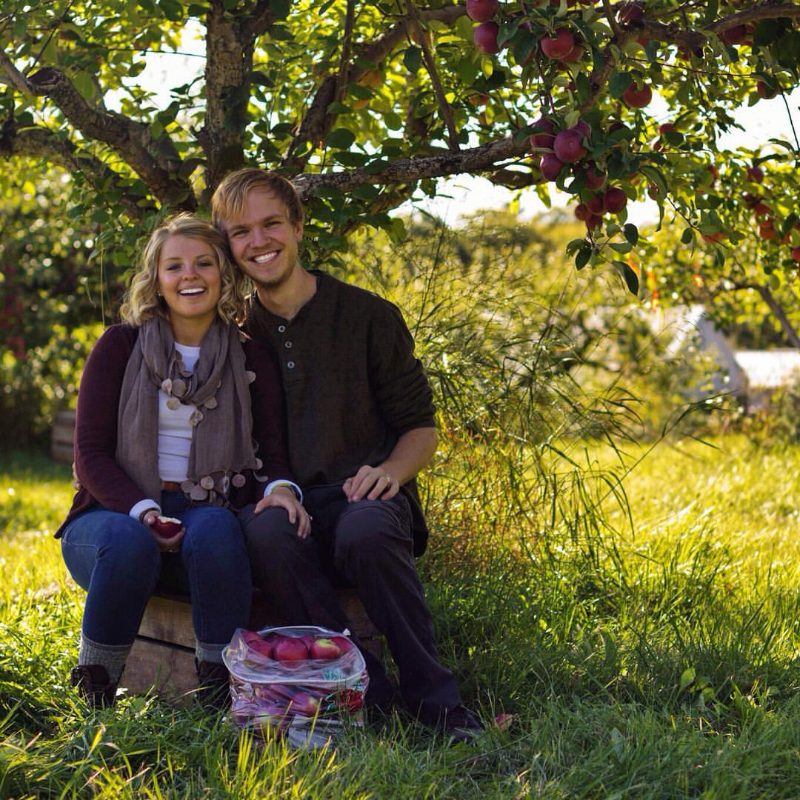
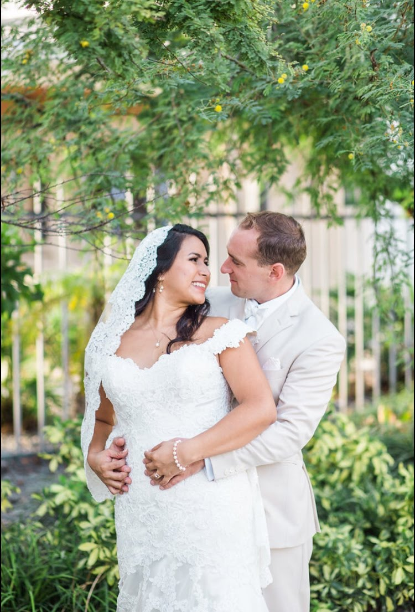
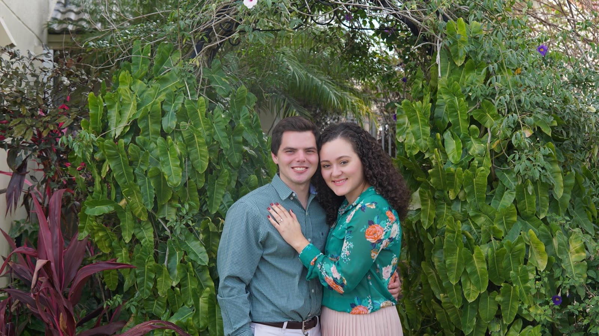
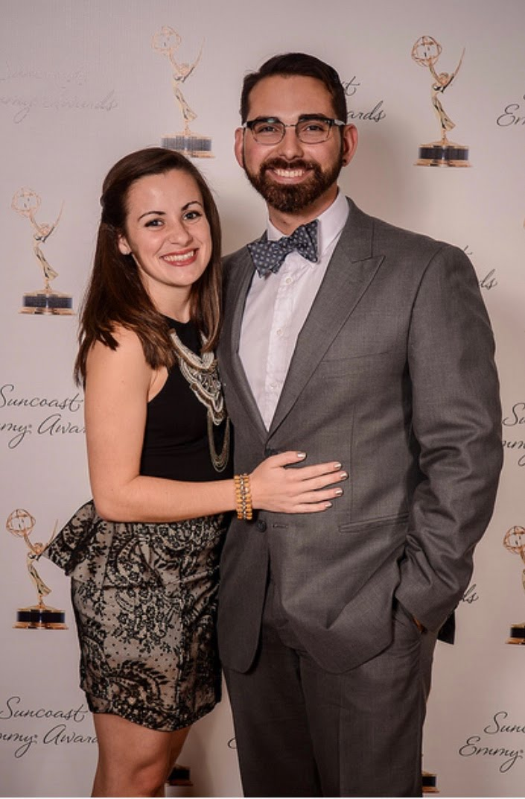
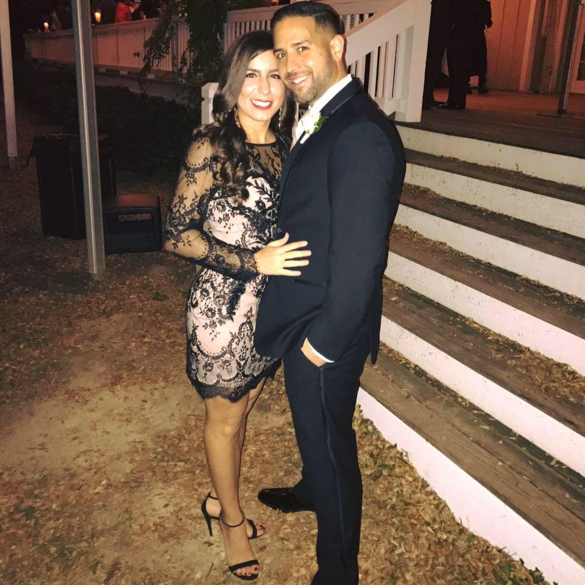

"I am grateful to have found in Creighton and NaProTechnology a way to manage my Polycystic Ovarian Disease which seeks to get to the root of the problem,
not just put a “band-aid” on it.
I have found in these methods a medically and theologically sound game plan to deal with my struggle with infertility
that traditional fertility specialists/gynecologists did not provide."
-Alejandra
"Creighton has given me and my husband a deeper insight into the way my body works, and has allowed us to grow in intimacy.
I feel empowered by this knowledge, and wish all women knew that there is a better option than hormonal birth control or IVF!"
-Alejandra

"Natural family planning has helped me solve a problem of horrible monthly cramping and irregular periods which I was dealing with for over 10 years.
Simply by charting for a few months, my NFP practitioner helped me to recognize my problem of low progesterone
and to head to the OB/GYN immediately with this information."
-Patrice
"After one month of progesterone treatment, my cycle was regulated and my cramps were close to non- existent.
NFP has honestly helped me to live a better life and to appreciate being a woman."
-Patrice

"I felt that in my past, birth control was the only way to go since that’s what my physician had prescribed.
I started Creighton after being on birth control for 7 years, then having 5 months of frustrating, long, irregular cycles.
I was diagnosed with PCOD and started on a treatment plan right away."
-Joanna
"We are so excited to say that after 8 months, we are now pregnant!
Without Creighton, I’m not sure it would have been possible to diagnose the problem and improve my cycles this quickly."
-Joanna
"The other great thing about NFP, and Creighton specifically, is that I feel it has also improved my marriage.
Having the open communication with my husband about our fertility and going through this journey has brought us closer than we’ve ever been.
I’m so thankful to know this is lifelong and I won't go back to the ‘artificial cycles’ I was on with birth control."
-Joanna
"I have had a lifelong struggle with endometriosis and was introduced to Creighton by the Gianna Center in NYC.
The Creighton Model has helped me gather the data I need in order to stabilize my hormones.
I encourage ALL women to chart, both single and married, who want to learn more about their bodies!"
-Meg

"Starting Crieghton's NFP program with Sarah was one of the best decisions we've made for our family, our bodies, & our marriage.
I am sad that the information and knowledge that Creighton offers isn't more well-known because I believe it is absolutely transformational!"
-Meghan
"Never before have I felt more empowered in my body as a woman, and more theologically attuned with my husband over God's heart for His creation --
I now make sure any woman I connect with over these topics knows what Creighton has to offer!"
-Meghan
"This method has helped me get to know my body so well and observations have become second nature to me.
My husband and I are very grateful for what we have learned and for the peace of mind that it has brought.
I hope that everyone struggling with fertility or infertility would use the Creighton Method.
Thanks to this method and my wonderful teacher we finally have this baby making business under control."
-Lourdes
"NFP has been instrumental in our engagement prep! It has helped my fiance and I know my body and has brought us together in a deeper way.
The more we chart, the more we grow in confidence of our ability to love each other in periods of fertility and infertility."
-Carolina

"As a woman, it's important for me to be in tune with my body. I'm grateful to have Creighton to provide my body with more natural and healthy choices"
-Johana
"Creighton has been a blessing for us. Thanks to Creighton we have learned so much about a woman's cycle.
We also have learned to communicate better with each other and our healthcare providers about our family's needs."
-Rachelle

"The Creighton Method has opened my eyes to risk factors and infertility issues and what those look like when charting.
I
love that it has also connected me to a community of other women who use this method."
-Zuleica
"Creighton has allowed me to gain a great appreciation for the beauty and intricacy of the female body.
Through learning my cycles, I can see God’s hand in my body and in my fertility.
Creighton also helps my husband
learn more about me than I ever could ever have taught him."
-Kristin
" Creighton is for the woman who wants to be free, for the woman who wants to live a natural life, and most
importantly for the woman who wants to learn about the beauty of her body.
When infertility can be a source of so much pain and grief, Creighton will be able to heal
me in more ways than one. Creighton is not a way of avoiding or achieving
pregnancy, it is a way of life."
-Annie

Learning how to read the signs my body has been telling me was one of the most empowering experiences for me
Now that I’m married, Creighton has proved itself to be effective and bring my husband and I to an even greater level of intimacy.
We truly feel like we’re working together to become closer to each other and closer to God.
-Eli

"Learning and using the Creighton method together has helped our relationship.
I get to know my wife on a more intimate level that removes the burden of tracking
fertile versus non-fertile days within her cycle from one spouse to both, because in the relationship there are two people, not one.
God has given us an amazing gift and doing this together is another way we can celebrate God’s love for us.
We are true believers in Natural Family Planning (NFP), particularly the Creighton Method."
-Robert